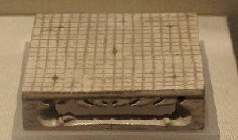

歷史
起源於中國
圍棋起源於中國，是世界上最古老的棋類運動之一。推測起源時間為大約公元前23世紀。傳說堯的兒子丹朱頑劣，堯發明圍棋以教育丹朱，陶冶其性情。目前圍棋的最早可靠記載見於春秋時期的《左傳》，戰國時期的弈秋是見於史籍的第一位棋士，最早的圍棋文物可以追溯到戰國時期。漢朝時棋盤為17路，南北朝時候，棋盤定型為現在的19道棋盤，傳入朝鮮半島，並且出現了評定棋士水平的圍棋九品制。圍棋逐漸成為中國知識階層修身養性的一項必修課目，為「琴棋書畫」文人四藝之一。

<---隋代張盛墓出土的圍棋盤模型，該圍棋盤盤面縱橫19道，共361個交叉點，表明隋朝初期或更早，19道圍棋盤就已經出現並沿用至今。
中國古代對圍棋尚有「弈」、「碁」、「手談」、「坐隱」、「爛柯」、「方圓」、「黑白」、「烏鷺」、「大棋」、「木野狐」等雅稱，下圍棋又稱對弈、博弈、奕棋。弈局指棋局，弈枰、弈楸、楸枰、河洛指棋盤，奕具泛指棋盤、棋子等棋具，弈譜、弈選、吳圖指棋譜；觀弈指看棋；弈林指圍棋圈。其中「碁」為棋之異體字，在古籍中專指圍棋，如《隋書‧經籍志》所載棋譜目錄，均作碁。中興於日本
圍棋在公元7世紀傳入日本，很快就流行於宮廷和貴族之中。戰國末期，權臣豐臣秀吉設立碁所。德川幕府時代，出現了在天皇或征夷大將軍面前對弈的「御城棋」，日本圍棋逐漸興盛，出現了本因坊、安井、井上、林等圍棋世家。其中坊門尤其人才輩出，先後出現了道策、丈和、秀和、秀策、秀甫、秀榮等傑出棋士。日本圍棋由於廢除了中國古代圍棋的座子制（古代中國圍棋是放四個座子，就是兩黑兩白放在對角星的位置上，雙方在這個基礎上開始布局），布局理論得以極大發展。
同時由於日本棋士對唐代圍棋數路法的勝負判定規則（以圍地多少還是活子多少為目的——或者是否以其它目的行棋，還可繼續考證）產生了直觀上的的誤解，從而產生對唐宋數路法扣除眼位和公氣、明清數子法終局還棋頭（其本質是子多為勝、眼位中盤的勝負計算方法）的疑惑，將其廢除，產生了與傳統圍棋根本不同的現代圍棋——爭地為目的，從而導致中國、日本、韓國由於對「地」這一概念的不同定義而產生的三種邏輯上平行的規則，至今未能統一。
近現代
明治維新以後，棋士失去幕府支援，開始謀求新的謀生手段，導致新聞棋戰和現代段位制的出現，並創立全國性的日本棋院。昭和時代，吳清源和木谷實共同掀起「新布局」的潮流，開始現代圍棋的時代。其後日本棋界一流棋士輩出，如坂田榮男、藤澤秀行、高川格，及後來的大竹英雄、武宮正樹、小林光一、石田芳夫等。
1949年中華人民共和國建立後，中國專業圍棋水平相當低。從1960年開始，每年舉辦中日圍棋友誼賽。其中，1961年第二屆來華訪問的日本圍棋代表團中的55歲伊藤友惠五段（女性）橫掃中國當時頂尖棋士，八輪全勝。1964年改稱中日圍棋對抗賽，一直舉辦到1991年。1984年，第一屆中日圍棋擂台賽開幕，拉開中日圍棋交流的序幕。中國人聶衛平在前三屆擂台賽中取得11連勝，極大的推動中國圍棋的普及。
1988年4月16日中國國家體委發布《圍棋國家段位標準》《圍棋國家段位標準實施細則》和《圍棋地方段位制》。
1988年，韓國人曺薰鉉在第一屆應氏杯世界圍棋錦標賽中奪冠，同樣引發韓國圍棋的熱潮。此後，大量世界性新聞棋戰出現。在這些棋戰中，李昌鎬從眾多棋士中脫穎而出，成為當時棋界第一人。2004年後，李昌鎬的狀態有所下滑，李世乭、古力等新銳勢力開始對其發起衝擊。
1996年，美國太空人丹巴利（Daniel T. Barry）博士與日本太空人若田光一博士在太空梭奮進號上進行首次太空圍棋對弈，他們使用一套特別設計的太空圍棋棋具，由Wai-Cheung Willson Chow所造[19]。兩位對弈太空人因此得到日本棋院授予榮譽段。
2013年，中國眾多棋士崛起，包括江維傑、范廷鈺、時越等年輕棋士接連贏得世界比賽冠軍，羋昱廷、陳耀燁、周睿羊、檀嘯等棋士大放異彩，人才輩出。
圍棋運動現已遍布世界各地，唯中國大陸、香港、台灣、日本、韓國最為興盛；西方國家已漸熱；東南亞正在發展中。目前職業圍棋水平最高的國家是中國和韓國。韓國雖然仍有頂尖高手支援，但已後繼乏力，在對戰中國上漸居下風。而日本已經難以和中韓抗衡，在國際賽上幾乎都是以慘敗收場。目前日本第一人是連續奪得眾多頭銜的井山裕太，成為日本第一個同時擁有七冠頭銜的棋士。